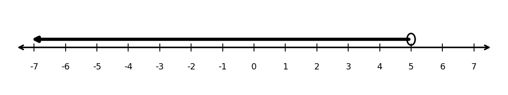
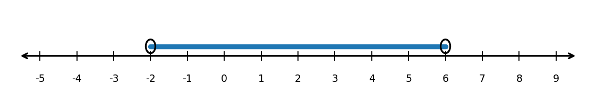

Extra Practice 1.2.4
State whether \(x=3\) is included in each set.
- \((3, 10]\)
- \([3, 10)\)
- \(x>3\)
- \(x\le 3\)
The number line shows a solution set.
- Write the set in interval notation.
- Write the set as an inequality.
- Explain why the endpoint is excluded.

The number line could represent the possible input values for a function.
- Write the domain in interval notation.
- Write the domain as an inequality.
- Explain why the endpoints might be excluded in a real problem.

Create a complete problem where students must move between all three representations: inequality notation, interval notation, and a number-line graph. Include the problem, the correct answer, and a brief explanation.
For each equation, identify the zeros without multiplying.
\(y=(x-3)(x+5)\)
\(y=2(x+1)(x-7)\)
\(y=-4(x-6)(x+2)\)
\(y=(x-9)^2\)
For each function, state the \(x\)-intercepts.
\(f(x)=(x-4)(x+2)\)
\(g(x)=3(x-1)(x-8)\)
\(h(x)=-2(x+6)(x-3)\)
Which equation has zeros \(x=-2\) and \(x=6\)?
\(y=(x-2)(x+6)\)
\(y=(x+2)(x-6)\)
\(y=(x-6)(x-2)\)
\(y=(x+6)(x-2)\)
Explain how you know.
Which expression is equivalent to \(x^2-5x-24\)?
\((x-8)(x+3)\)
\((x+8)(x-3)\)
\((x-6)(x+4)\)
\((x+6)(x-4)\)
Solve by factoring.
\(2x^2+7x+3=0\)
\(3x^2-10x+8=0\)
\(4x^2-12x+9=0\)
Write a quadratic function in factored form with zeros \(3\) and \(8\), and \(a=-2\).
Then find the \(y\)-intercept.
Compare the two functions.
\(f(x)=(x-3)(x+1)\)
\(g(x)=2(x-3)(x+1)\)
What features are the same?
What features are different?
Explain why multiplying by \(2\) does not change the zeros.
Create a quadratic equation that satisfies all of the following:
it has two real zeros
one zero is negative and one zero is positive
the graph opens downward
the \(y\)-intercept is positive
Then:
Write your equation in factored form.
Identify the zeros and \(x\)-intercepts.
Find the \(y\)-intercept.
Sketch a graph.
Explain why your equation satisfies every condition.

Match each expression to an equivalent radical form.
\(x^{3/2}\)
\(x^{2/5}\)
\(x^{4/3}\)
\(x^{1/6}\)
Choices:
\(\sqrt[5]{x^2}\)
\(\sqrt{x^3}\)
\(\sqrt[6]{x}\)
\(\sqrt[3]{x^4}\)
Evaluate each expression without a calculator. Show whether you take the root first or apply the power first.
\(36^{3/2}\)
\(27^{2/3}\)
\(16^{5/4}\)
\(100^{3/2}\)
A student evaluates:
\[(-27)^{2/3}\]
and gets \(-9\).
Explain the likely mistake.
Evaluate the expression correctly.
Explain why the result is positive.
Create an expression involving a rational exponent that satisfies all of the following:
it has a fractional exponent
it can be written as a radical
it evaluates to \(16\)
the root should be taken before the power for an efficient solution
Then:
Write your expression.
Rewrite it in radical form.
Evaluate it exactly.
Explain why your expression satisfies every condition.